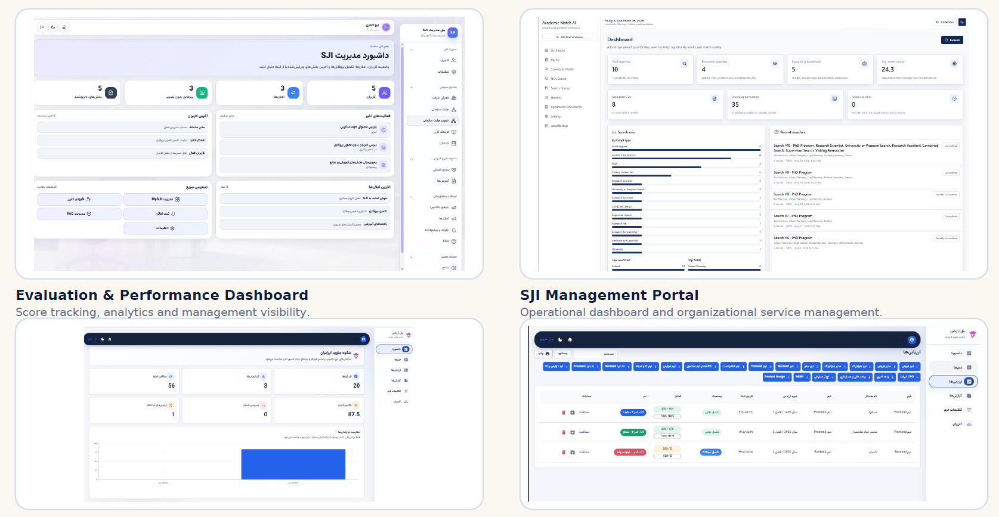
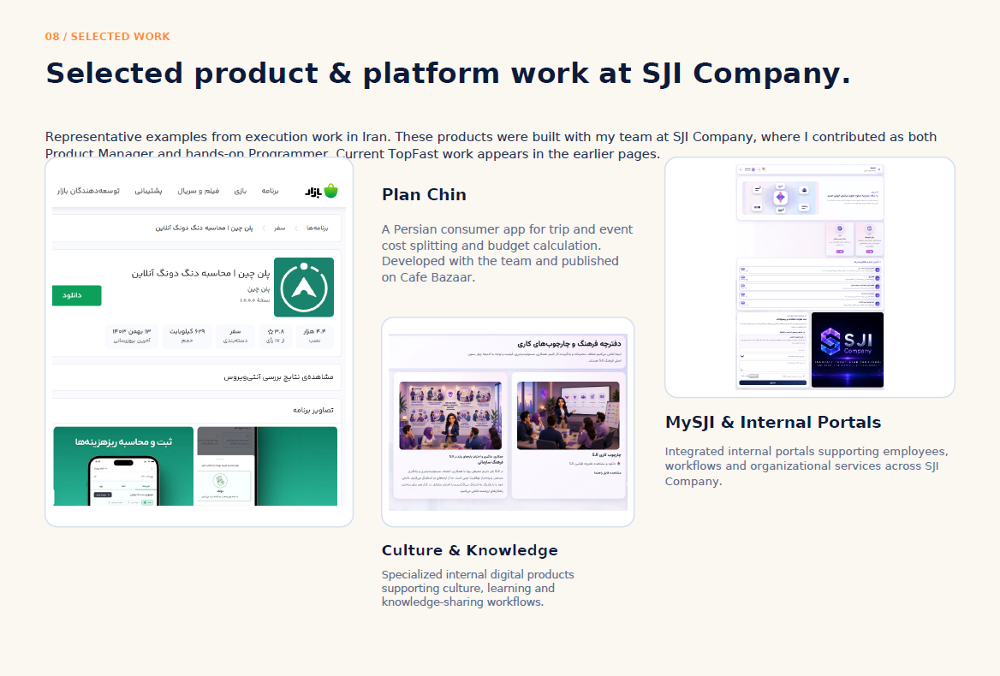

Enterprise / Product Case Study
MySJI & Internal Portals
Organizational services and internal workflow touchpoints.

Supplied product artifact · privacy edited · no performance claims inferred.
Product overview
SJI internal service portals and MySJI work samples supporting organizational workflows. These are kept separate from the evaluation product and consumer app.
Business problem
Provide organizational services and internal workflow access. Product-specific research evidence is pending.
Target users
Employees and organizational service teams, as described in the supplied work sample.
My product role
The CV’s verified SJI title is Product Owner. The supplied composite describes team product and programming work, but the exact contribution to each portal and its dates require confirmation.
Product strategy and discovery
Detailed portal discovery, prioritization and decisions are pending.
Main capabilities
Internal service access, modules and workflow touchpoints visible in the supplied portal artifacts.
Key workflows
Access organizational services and internal modules. The unrelated Academic Match AI tile from the supplied composite has been excluded.
Delivery and technical collaboration
The supplied work sample attributes development to an SJI team. Specific architecture and personal implementation contributions are pending.
Outcomes supported by evidence
Provided portal work samples establish visual context. Current use, deployment status and operational impact are not asserted.
Screenshot gallery
Supplied artifacts have been edited for privacy. Design screens document product context; they do not establish production status or measured results.



View full image ↗